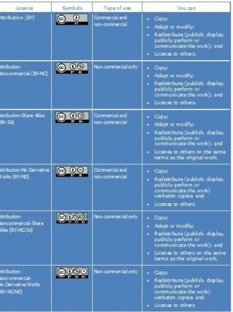

(Der har tidligere været en forside på dette dokument, men det fungerede ikke som html. Så måtte fjernes)
Persondataloven / GDPR
Redegør for persondataloven / GDPR
Ser man på datatilsynets hjemmeside finder man EU’s definition af Persondataforordningen (GDPR):
”Beskyttelse af fysiske personer i forbindelse med behandling af personoplysninger er en grundlæggende rettighed. I artikel 8, stk. 1, i Den Europæiske Unions charter om grundlæggende rettigheder (»chartret«) og i artikel 16, stk. 1, i traktaten om Den Europæiske Unions funktionsmåde (TEUF) fastsættes det, at enhver har ret til beskyttelse af personoplysninger, der vedrører den pågældende.”
Det vil sige, at personoplysninger/persondata er al den information, som identificerer en person. Dette kan f.eks. være navn, adresse, CPR-nummer, straffeattest, økonomiske forhold eller billede af personen.
Alle virksomheder skal beskytte den persondata som de ligger inde med. Det er et lovkrav at virksomhederne beskytter de personfølsomme oplysninger ved blandt andet at sørge for høj it- sikkerhed.
Immaterielle rettigheder
Immaterielle rettigheder er rettigheden over en ide, et produkt, en opfindelse.
Man kan få beskyttet ideen/produktet ved at søge om patent, varemærke, ophavsret m.m.
Har man f.eks. patent på et produkt og en konkurrent kopierer ideen, så kan man gå rettens vej.
Ophavsret
Med ophavsret kan man beskytte f.eks. sine malerier, fotos, kunst mod at blive brugt uden tilladelse. Som Multimediedesigneruddannelsen skal man være OBS på ikke at bruge f.eks. fotos eller lign.
uden tilladelse i et grafiske materiale udarbejdet for en kunde.
Man skal altid sørge for at få tilladelse inden brug hvis der er copyright på f.eks. et logo, foto eller lign. Det er tilladt at dele et opslag på SoMe –
f.eks. kan man dele en kunstners oprindeligt opslag uden tilladelse. På Facebook mister man mange rettigheder så snart man poster noget på sin side. Facebook ”ejer” alt hvad der ligger på Facebook –
det er en del af deres betingelser.
Forklar/redegør også følgende
Et varemærke fortæller noget om hvilken producent der er tale om.
Et varemærke kan f.eks. vær et designermærke som fortæller noget om høj kvalitet
og prisniveau. Det kan være en stor fordel, hvis man som Multimediedesigner på sin referenceliste har nogle kunder med et godt varemærke.
Det kan være med til at signalere noget om kvaliteten af ens arbejde.
Nej en ide er ikke beskyttet af ophavsretten – man kan ikke beskytte noget som endnu ikke er skabt. Man kan godt have ophavsret på et stykke software – det er jo skabt.
Open source er nogle softwarelicenser som giver brugerne adgang til programmets kildekode eksempel Magento opensource it –
https://www.magenta.dk/produkter-open-source-software-den- ffentlige-sektor/
Hvad er licensaftaler?
En licensaftale er en aftale mellem to parter – f.eks. en multimediedesigner og en større virksomhed, hvor designeren får lov til at benytte noget af deres software.
(http://www.ip- andelsportal.dk/aftaleindgaaelse/valg-af-aftale/licensaftaler.aspx)
Creative Commons mål er at udvide spektret af fri kultur. Dette ved at gøre flere kreative værker legalt tilgængelige ift. deling.
Sine kruse Nyrup MMD 2020
